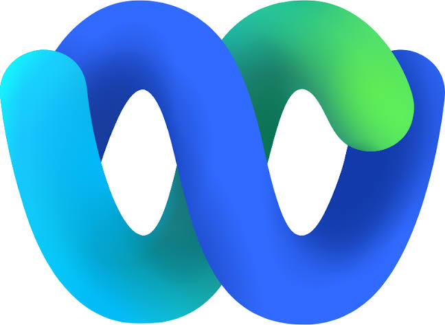

Customers needed provider choice, on-premises flexibility, and industry-specific solutions.
Product work
Enterprise AI platform
I turned one AI integration into an extensible platform
At Cisco, I set the product strategy for Universal Harness, a shared media and orchestration layer that gave enterprises provider choice, gave AI vendors one path into Webex Contact Center, and created a foundation for vertical solutions.
Executive summary
From a single integration to an enterprise AI ecosystem
I reframed a provider integration as a platform strategy, aligned the technical and commercial systems required to ship it, and built the partner path needed for adoption.
One shared platform would connect first-party and third-party AI across Webex experiences.
I aligned architecture, security, billing, partner enablement, and go-to-market execution.
Partner implementation time fell from more than five months to less than two weeks.

Webex
Amazon Lex
AI provider collaboration
One connector. Two product ecosystems.
I helped turn the platform strategy into a provider partnership, an open-source connector, and technical narratives for both Cisco and AWS audiences.
One platform, three customer problems
Webex Contact Center was building its first-party AI portfolio, while customers were already investing in other providers. I framed the opportunity as an ecosystem problem: one platform had to serve buyers, builders, and specialist partners.
01
Enterprise and large customers
They needed
Existing AI providers, data controls, and on-premises business logic to work with Webex.
I delivered
Provider choice across cloud and on-premises, with first-party and third-party agents in the same IVR.
02
AI vendors and ISVs
They needed
One repeatable integration instead of custom Webex development for every customer.
I delivered
A common API contract, Service Apps, sample code, test beds, and a reusable onboarding path.
03
Vertical customers and partners
They needed
Industry-specific workflows built with specialized models and customer business logic.
I delivered
Media and transcript APIs that connect custom speech, LLM, analytics, and CRM services to Webex.
Cloud architecture
The original Bring Your Own Virtual Agent design
Control and media paths
Webex Contact Center connects customer configuration, live media, and the AI vendor’s application
Swipe horizontally to follow the complete architecture.
- 01Service App
Registers and authorizes the provider endpoint.
- 02Cross-cloud media
Customer audio moves from Cisco cloud to the selected AI Vendor cloud.
- 03Bidirectional streaming
Universal Harness maintains the real-time conversation in both directions.
Make AI a platform capability, not a vendor integration
The product
Universal Harness
A shared media and orchestration layer connecting Webex Contact Center to Cisco and third-party AI across cloud and on-premises deployments. This turned the first Google integration into a reusable product surface.
Market insight
AI would touch the entire contact center, not just the IVR.
Select a stage to see where AI appears.
Speech recognition, speech synthesis, and scripted or autonomous agents.
Use journey, language, location, and CRM context to choose the next best destination.
Live transcripts, in-call assistance, wrap-up summaries, and transfer context.
Identify topics, patterns, and customer signals across interaction transcripts.
Auto CSAT, sentiment analysis, and agent performance signals.
Update interaction records and trigger downstream workflow automation.
Product strategy
Three pillars made AI portable across the platform.
AI providersSpeech · NLU · LLM
Stream AI in→
Webex experiencesIVR · routing · agent
Webex signalsMedia · transcripts · context
Stream AI out→
External solutionsAssist · analytics · automation
Plug and play
Mix Cisco and partner AI without rebuilding the contact-center flow.
I made the tradeoffs that turned the thesis into a viable product
The platform had to perform in real time, earn enterprise trust, remain usable for partners, and fit Cisco’s reseller economics. Three decisions shaped the path.
-
01 · Transport
Expand beyond gRPC to meet the market
Starting pointEngineering selected gRPC for the original Google integration and its server-to-server streaming model.
Market signalAI vendors consistently found WebSockets more compatible with the integration patterns already available in the market.
My leadershipI turned that feedback into a product requirement and drove the WebSocket release, opening a more familiar path without replacing the gRPC foundation.
-
02 · Latency and trust
Keep the media path direct without giving up control
ConstraintEvery additional environment could add latency, while cross-cloud media still required strong identity and isolation.
My decisionI limited media to Cisco cloud and the vendor cloud. Cisco issues the token even when the vendor invokes the API, simplifying token management and controlling Cisco-side configuration.
Trust layerWe introduced mutual TLS so vendors can authenticate that data streams originate from Cisco.
-
03 · Commercial model
Make consumption pricing predictable for the reseller ecosystem
ConstraintReseller commissions depended on predictable three-to-five-year contract value, creating resistance to an open-ended usage bill.
My decisionI introduced a monthly committed usage floor. Customers pay the commitment and are billed for overage when consumption exceeds it.
ResultCisco gained usage-based economics while partners retained predictable monthly and annual value for commission planning.
I led the work from platform requirements through market adoption
My ownership extended beyond the roadmap. I aligned seven engineering teams, directed two scrum teams, and worked with product leaders at Google, NVIDIA, AWS, and other AI providers around one platform direction.
7engineering teams aligned
2scrum teams directed
3+AI provider leadership teams engaged
-
01
Architecture and scale
Set the non-negotiables for a shared foundation
Shaped interoperability, latency, disaster recovery, and capacity requirements for a platform running 30,000 concurrent AI-streamed calls in production and architected for 40,000.
-
02
Security
Defined trust across the provider boundary
Established Service App authorization, token validation, provider isolation, and mutual TLS requirements for cross-cloud media.
-
03
Commercialization
Built the business model with finance and billing
Modeled COGS for off-platform media, aligned metering and billing, and introduced a usage-based SKU with predictable commitments.
-
04
Partner enablement
Made a complex API usable across the ecosystem
Co-authored integration guides, sample applications, test beds, demos, and reusable connector patterns while working with product leaders at major AI providers.
-
05
Go to market
Carried the platform narrative into the market
Created product narratives, demos, and technical education for customer and partner audiences.
- WebexOne 2024
- WebexOne 2025
- Cisco Live 2025
- Cisco Live 2026
Bring Your Own AI
Three APIs enabled distinct AI experiences
Each interface opened a different part of the contact center to customer-selected AI.
01
gRPC + WebSocket
Voice Virtual Agent APIs
Power a complete automated voice conversation inside the IVR.
AI features enabled
- Scripted or autonomous voice agents
- Speech recognition and synthesis
- NLU and LLM orchestration
- Context transfer to human agents
02
Live audio stream
Media Forking API
Send live call audio to specialized AI services.
AI features enabled
- Custom transcription
- Real-time summaries
- Bring-your-own agent assist
- Speech and interaction analytics
03
Transcript events
Real-Time Transcript API
Make live conversation text available to downstream applications.
AI features enabled
- Bring-your-own agent assist
- Live agent guidance
- Custom interaction analytics
- Workflow automation from conversation data
I made the platform easier to adopt, then scaled it in production
The first vendor implementation took more than five months. Documentation, sample applications, test beds, and demos reduced the time for later vendors to show a working integration to less than two weeks.
First vendor
5+ months
to implement the virtual-agent integration
Repeatable path
<2 weeks
to demonstrate a fully working solution
Developer guide + sample app
Conference presentation
Downstream adoption
Cisco DevNet reference implementation
Onboarding, authentication, gRPC and WebSocket contracts, and runnable simulators.
View repository ↗ Demo playlistPartner implementation walkthroughs
Recorded demonstrations that make the integration path easier to understand and reproduce.
Watch demos ↗Presented across WebexOne and Cisco Live
I delivered the architecture and partner implementation story at WebexOne 2024 and 2025, and Cisco Live 2025 and 2026.
Four conference programsReusable BYoVA connector pattern
Technical sales and developer teams reused the sample architecture and added provider-specific adapters.
View repository ↗
Production proof
The platform moved from architecture to production scale
5+
partner integrations published
10M
calls streamed annually
70
customer organizations streaming calls
Established a new consumption model
The model created a precedent for later AI products to align price with usage instead of relying only on predictable license tiers.
Launched in contact centers with more than 10,000 agents
Enterprise customers with more than 10,000 users could personalize the experience while continuing to use their existing AI investments.
First-party and third-party AI can coexist in one flow
Customers can decide where each agent participates and customize automation around their own business logic.